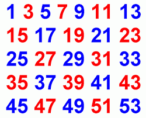

Lecture 4 : Four Fundamental Counting Problems
{kind=link}
In
troduction The addition and multiplication principles, along with a certain amount of cleverness, will allow you to solve almost every counting problem from scratch. But, it’s useful to have a few “basic recipes” in order to handle certain situations that arise over and over again.
In this lecture, four such recipes are introduced. They all deal with the fundamental problem of constructing collections of a certain size of elements from a given base set – but with two directions of variation:
• Are we concerned with the order in which the elements occur?
• Is repetition of elements allowed?
The four types of collections thus formed are:
sequences, permutations, subsets and multisets.
The framework
We will work throughout with a fixed set A of n elements. From A we will be constructing collections of a fixed size, k. We may or may not care about the order in which the resulting elements are chosen, and we may or may not allow repeated elements. That gives us four different situations to consider, summarized in the
Example:
The 3-sequences from {0, 1, 2, . . . , 9}
correspond naturally to the numbers from 0 to
999, written with leading 0’s if necessary to make them 3 digits long (for instance we write 045 rather than 45). So, it’s no surprise that there are 1000 =
103 of them.